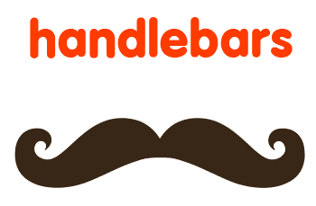

Burying myself in PhD-ing and Lecturing has left a wake of projects behind me.
I'm currently working on blowing off the cobwebs and getting these documented online!
Until then I've briefly summed up some individual work-born projects along with my personal tinkerings here.
Beginning as the dissertation for my undergraduate degree, my project was later taken on by a group of postdocs for further development where they collaborated with a commercial partner.
Yodle builds PowerPoint style presentations for a chosen topic in the web browser. The user simply inputs their topic of interest, choosing the time they have to learn and their expertise in the subject area. The system harvests Wikipedia's structured text and builds a course of study personalized for that user. More Info


During my internship in the Adler Planetarium, I developed an API that could be used to construct a drawing tool. Given the number of lines and number of joins a shape must have, plus any additional mathematical constraints, the API will enable the end user to click and drag to draw and resize a shape on a given canvas.
Though Zooniverse code is open-source this API is not currently online

After completing two Coursera courses in Machine Learning and Data Science, I wanted a real-world example to get better hands on experience.
Though the competition had ended I chose the Kaggle Personalized Web Search Challenge as the data involved most closely resembled that which my PhD would require. This competition asked for Machine Learning tools to be applied to a huge quantity of search engine data (16GB of text!) and predict which result the user would select. My solution ranked in the top 20% and provided me with a great learning opportunity.

A Java based simulator for an Enigma Machine complete with a GUI.
The Enigma Machine was an electronic cryptography machine used in the early- to mid-20th century.
This project implemented Rotors, Plugboards and a Reflector with the ability to change the settings of each of these.
Read More: https://en.wikipedia.org/wiki/Enigma_machine

Finding ourselves particularly uninspired during a long lecture, a colleague and I came up with this neat web app. It takes any piece of text, be it a news article or full epub book, and transforms it to look like a LaTeX style academic paper

My iTunes Library had been growing for a great many years and was a complete mess.
Having tried out some library organisation software, I wasn't quite happy with any, so I created my own. It simply scrapes Wikipedia to rename songs with nicely formatted and correct Artist, Song Title, Album Title and Year. A bit of a niche use as it assumes each song has at least approximately the correct title but for my purposes it did exactly what I needed, I also implemented a GUI to allow me to scan the changes before applying.
This also provided my first experiment with building a MACOSX application
Finding the need in my own life, I built a system which correctly backs up chat logs and also performs some analysis of these logs. It takes the raw chat exports from Telegram and Whatsapp and combines them creating a list of the media contained within, it then compares this list with a media folder and checks if any of these items are missing.
The analysis of these chats was performed using R to see which emojis and words were most frequently used along with the distribution of these between the chat participants. It also produced a timeline indicating the frequency of messages.

Rebekah Clarke | RebekahStoranClarke at gmail dot com | Last Updated 22/08/18